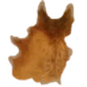

Root Harnesk¶
chest armour · armour and evasion
Finely wrought and strong enough to turn even the sharpest blades.
Unique items made from it: Hide of the Second Wind
Implicits¶
Always on the item. Ranges are rolled when the item is made.
- (8-12)% increased poison chance
Stats¶
| Stat | Quality 1 | Quality 2 | Quality 3 | Quality 4 |
|---|---|---|---|---|
| Armour | 8 | 10 | 12 | 14 |
| Evasion | 5.4 | 6.75 | 8.1 | 9.45 |
| Durability | 800 | 900 | 1000 | 1100 |
| Weight | 10 | 10 | 10 | 10 |
| Movement speed | -2% | -2% | -2% | -2% |
Recipe¶
Workbench · station level 2
| Material | Craft | To 2 | To 3 | To 4 | |
|---|---|---|---|---|---|
| Root | 10 | 2 | 4 | 6 | |
| Ancient Bark | 10 | 5 | 10 | 15 | |
 |
Deer Hide | 2 | 0 | 0 | 0 |
Forge of Potential¶
The idol that upgrades this item at the Forge of Potential: Iron Protection Idol. It is not spent when crafting the item.
Item level¶
Crafted items are item level 43 (Swamp): this sets which property tiers they can roll.
Mods¶
Every property that can roll on this item, with values for this item's slot. The weight is a property's chance against the others of its type; the share is that chance among all of them here, whatever the item level. Higher item levels unlock more properties and better tiers.
Prefix (49)¶
| Mod | Value | From (item level) | Tiers | Weight | Share |
|---|---|---|---|---|---|
| #% increased armour | (7.5–10.5) → (27–36) | Meadows (1) | 5 | 1000 | 4.2% |
| #% increased armour from equipped body armour | (5–7) → (18–24) | Meadows (1) | 5 | 1000 | 4.2% |
| #% increased armour from equipped helmet | (5–7) → (18–24) | Meadows (1) | 5 | 1000 | 4.2% |
| #% increased armour from equipped leg armour | (5–7) → (18–24) | Meadows (1) | 5 | 1000 | 4.2% |
| #% increased evasion rating | (3.8–5.1) → (13.3–18.2) | Meadows (1) | 5 | 1000 | 4.2% |
| #% increased evasion rating from equipped body armour | (12–15) → (40–54) | Meadows (1) | 5 | 1000 | 4.2% |
| #% increased evasion rating from equipped helmet | (15–21) → (54–72) | Meadows (1) | 5 | 1000 | 4.2% |
| #% increased evasion rating from equipped leg armour | (12–15) → (40–54) | Meadows (1) | 5 | 1000 | 4.2% |
| #% increased item armour | (10–19) → (60–80) | Meadows (1) | 5 | 1000 | 4.2% |
| #% increased item evasion rating | (7.5–14.25) → (45–60) | Meadows (1) | 5 | 1000 | 4.2% |
| #% increased maximum health | (3.8–5.1) → (13.4–18.2) | Meadows (1) | 5 | 1000 | 4.2% |
| +# armour | (3–4) → (9–12) | Meadows (1) | 5 | 1000 | 4.2% |
| +# evasion rating | (3–6) → (24–33) | Meadows (1) | 5 | 1000 | 4.2% |
| +# to maximum eitr | (8–14) → (46–60) | Meadows (1) | 5 | 1000 | 4.2% |
| +# to maximum health | (8–14) → (46–60) | Meadows (1) | 5 | 1000 | 4.2% |
| #% increased rune shield | (6–8) → (22.5–30) | Meadows (1) | 5 | 705 | 2.9% |
| #% increased armour | (7.5–10.5) → (27–36) | Meadows (1) | 5 | 490 | 2.0% |
| #% increased rune shield | (6–8) → (22.5–30) | Meadows (1) | 5 | 490 | 2.0% |
| #% increased armour from equipped body armour when hit recently | (30–42) → (106–146) | Meadows (1) | 5 | 348 | 1.4% |
| #% increased armour when hit recently | (15–21) → (54–72) | Meadows (1) | 5 | 348 | 1.4% |
| #% increased evasion rating from equipped body armour on dodge recently | (22–32) → (81–108) | Meadows (1) | 5 | 348 | 1.4% |
| #% increased evasion rating per # points of comfort | (0.9–1.3), 10 → (3.3–4.5), 10 | Meadows (1) | 5 | 348 | 1.4% |
| #% increased evasion rating while moving | (4.5–7) → (16.5–22.5) | Meadows (1) | 5 | 348 | 1.4% |
| +# maximum health per point of armour from your equipped helmet | (0.6–0.8) → (2.25–3) | Meadows (1) | 5 | 348 | 1.4% |
| +# maximum health while fed | (12–18) → (45–60) | Meadows (1) | 5 | 348 | 1.4% |
| #% increased evasion rating at low stamina | (7.5–10.5) → (27–36) | Meadows (1) | 5 | 338 | 1.4% |
| #% increased evasion rating at night | (7.5–10.5) → (27–36) | Meadows (1) | 5 | 338 | 1.4% |
| #% increased evasion rating while sneaking | (6–8.25) → (21.375–29.25) | Meadows (1) | 5 | 338 | 1.4% |
| +# armour for your companion per # points of current armour | (4–8), 100 → (18–24), 100 | Meadows (1) | 5 | 338 | 1.4% |
| #% increased armour at night | (15–21) → (54–72) | Meadows (1) | 5 | 254 | 1.1% |
| #% increased armour per # points of rested charge | (1.2–1.6), 10 → (4.5–6), 10 | Meadows (1) | 5 | 254 | 1.1% |
| #% increased armour when hit recently | (15–21) → (54–72) | Meadows (1) | 5 | 254 | 1.1% |
| #% increased rune shield while fed | (8–10.5) → (28–37.5) | Meadows (1) | 5 | 254 | 1.1% |
| +# maximum eitr per point of rune shield from your equipped helmet | (0.6–0.8) → (2.25–3) | Meadows (1) | 5 | 254 | 1.1% |
| +# maximum health per # points of current armour | (0.6–0.8), 100 → (2.25–3), 100 | Meadows (1) | 5 | 254 | 1.1% |
| +# rune shield per # points of eitr from food | (0.6–0.8), 50 → (2.25–3), 50 | Meadows (1) | 5 | 254 | 1.1% |
| #% increased thorns | (11–14) → (36–48) | Meadows (1) | 5 | 245 | 1.0% |
| +# thorns | (4–8) → (18–24) | Meadows (1) | 5 | 245 | 1.0% |
| #% increased maximum health | (3.8–5.1) → (13.3–18.2) | Meadows (1) | 5 | 176 | 0.7% |
| #% increased maximum health for pets | (3.8–5.1) → (13.3–18.2) | Meadows (1) | 5 | 149 | 0.6% |
| #% increased thorns at low life | (21–27) → (72–96) | Meadows (1) | 5 | 127 | 0.5% |
| +# thorns per # points of current armour | (0.031–0.043), 20 → (0.111–0.152), 20 | Meadows (1) | 5 | 127 | 0.5% |
| +# thorns per point of armour from your equipped body armour | (0.031–0.043) → (0.111–0.152) | Meadows (1) | 5 | 127 | 0.5% |
| +# thorns with the shield up | (8–10) → (27–36) | Meadows (1) | 5 | 127 | 0.5% |
| #% increased defences | (12–16.5) → (16.5–22.5) | Mistlands (130) | 2 | 122 | 0.5% |
| #% increased maximum health for your companion | (3.8–5.1) → (13.3–18.2) | Meadows (1) | 5 | 122 | 0.5% |
| +# item durability on this item | (8–15) → (76–100) | Meadows (1) | 5 | 121 | 0.5% |
| #% increased item potential | (10–15) → (91–100) | Meadows (1) | 8 | 61 | 0.3% |
| +# to item quality | 1 → (1–2) | Swamp (43) | 2 | 24 | 0.1% |
Suffix (196)¶
| Mod | Value | From (item level) | Tiers | Weight | Share |
|---|---|---|---|---|---|
| #% increased Dexterity | (5.5–7) → (18–24) | Meadows (1) | 5 | 1000 | 4.8% |
| #% increased Strength | (5.5–7) → (18–24) | Meadows (1) | 5 | 1000 | 4.8% |
| +# Dexterity | (8–10) → (27–36) | Meadows (1) | 5 | 1000 | 4.8% |
| +# Strength | (8–10) → (27–36) | Meadows (1) | 5 | 1000 | 4.8% |
| +#% fire resistance | (3.8–5.1) → (13.3–18.2) | Meadows (1) | 5 | 1000 | 4.8% |
| +#% frost resistance | (3.8–5.1) → (13.3–18.2) | Meadows (1) | 5 | 1000 | 4.8% |
| +#% lightning resistance | (3.8–5.1) → (13.3–18.2) | Meadows (1) | 5 | 1000 | 4.8% |
| +#% poison resistance | (3.8–5.1) → (13.3–18.2) | Meadows (1) | 5 | 1000 | 4.8% |
| +#% spirit resistance | (3.8–5.1) → (13.3–18.2) | Meadows (1) | 5 | 1000 | 4.8% |
| +#% to fire resistance | (6–10) → (33–39) | Meadows (1) | 5 | 1000 | 4.8% |
| +#% to frost resistance | (6–10) → (33–39) | Meadows (1) | 5 | 1000 | 4.8% |
| +#% to lightning resistance | (6–10) → (33–39) | Meadows (1) | 5 | 1000 | 4.8% |
| +#% to poison resistance | (6–10) → (33–39) | Meadows (1) | 5 | 1000 | 4.8% |
| +#% elemental resistance | (3.8–5.1) → (13.3–18.2) | Meadows (1) | 5 | 250 | 1.2% |
| +#% poison resistance while fed | (4.5–7) → (16.5–22.5) | Meadows (1) | 5 | 139 | 0.7% |
| +#% poison resistance while a mead effect is active | (4.5–7) → (16.5–22.5) | Meadows (1) | 5 | 128 | 0.6% |
| #% increased ailment and buff duration while rested | (18–24) → (63–84) | Meadows (1) | 5 | 69 | 0.3% |
| #% increased health regeneration at night | (15–21) → (54–72) | Meadows (1) | 5 | 69 | 0.3% |
| #% increased health regeneration for your companion per # points of comfort | (1.2–1.6), 10 → (4.5–6), 10 | Meadows (1) | 5 | 69 | 0.3% |
| #% increased health regeneration per # points of comfort | (1.2–1.6), 10 → (4.5–6), 10 | Meadows (1) | 5 | 69 | 0.3% |
| #% increased health regeneration while fed | (9–14) → (33–45) | Meadows (1) | 5 | 69 | 0.3% |
| #% increased rune shield recharge on evade recently | (12–18) → (45–60) | Meadows (1) | 5 | 69 | 0.3% |
| #% increased stealth at night | (21–27) → (72–96) | Meadows (1) | 5 | 69 | 0.3% |
| #% increased weapon oil effect on chain finishers | (15–21) → (54–72) | Meadows (1) | 5 | 69 | 0.3% |
| #% increased weapon oil effect on primary attack hit recently | (12–15) → (40–54) | Meadows (1) | 5 | 69 | 0.3% |
| #% reduced noise while running | (9–7) → (31.5–23) | Meadows (1) | 5 | 69 | 0.3% |
| #% reduced noise while sneaking | (10.5–7.5) → (36–27) | Meadows (1) | 5 | 69 | 0.3% |
| #% rune shield recharge delay at full eitr | (−14–−9) → (−45–−33) | Meadows (1) | 5 | 69 | 0.3% |
| +#% glancing blow chance on dodge recently | (5–7) → (18–24) | Meadows (1) | 5 | 69 | 0.3% |
| +#% glancing blow chance on evade recently | (5–7) → (18–24) | Meadows (1) | 5 | 69 | 0.3% |
| +#% glancing blow damage reduction when hit recently | (5–7) → (18–24) | Meadows (1) | 5 | 69 | 0.3% |
| +#% resistance to ailment build-up of base for burning while moving | (6–9) → (22.5–30) | Meadows (1) | 5 | 69 | 0.3% |
| +#% resistance to ailment build-up of base for poison on dodge recently | (10–14) → (36–48) | Meadows (1) | 5 | 69 | 0.3% |
| +#% resistance to ailment build-up of base per # points of comfort | (1.2–1.6), 10 → (4.5–6), 10 | Meadows (1) | 5 | 69 | 0.3% |
| +#% resistance to ailment build-up of base while airborne | (15–21) → (54–72) | Meadows (1) | 5 | 69 | 0.3% |
| +#% stagger recovery on dodge recently | (10–14) → (36–48) | Meadows (1) | 5 | 69 | 0.3% |
| #% increased Rested duration on drinking a mead recently | (12–15) → (40–54) | Meadows (1) | 5 | 64 | 0.3% |
| #% increased eitr regeneration at full rune shield | (15–21) → (54–72) | Meadows (1) | 5 | 64 | 0.3% |
| #% increased eitr regeneration on ignite recently | (30–42) → (106–146) | Meadows (1) | 5 | 64 | 0.3% |
| #% increased eitr regeneration per point of rested charge | (1.2–1.6) → (4.5–6) | Meadows (1) | 5 | 64 | 0.3% |
| #% increased eitr regeneration while a mead effect is active | (9–14) → (33–45) | Meadows (1) | 5 | 64 | 0.3% |
| #% increased eitr regeneration while wet | (12–15) → (40–54) | Meadows (1) | 5 | 64 | 0.3% |
| #% increased health regeneration at full stamina | (12–16) → (40–56) | Meadows (1) | 5 | 64 | 0.3% |
| #% increased health regeneration at low life | (15–21) → (54–72) | Meadows (1) | 5 | 64 | 0.3% |
| #% increased health regeneration out of combat | (7.5–10.5) → (27–36) | Meadows (1) | 5 | 64 | 0.3% |
| #% increased health regeneration per # points of comfort | (1.2–1.6), 10 → (4.5–6), 10 | Meadows (1) | 5 | 64 | 0.3% |
| #% increased health regeneration per point of rested charge | (0.41–0.56) → (1.42–1.94) | Meadows (1) | 5 | 64 | 0.3% |
| #% increased health regeneration while a mead effect is active | (9–14) → (33–45) | Meadows (1) | 5 | 64 | 0.3% |
| #% increased health regeneration while moving | (9–14) → (33–45) | Meadows (1) | 5 | 64 | 0.3% |
| #% increased health regeneration while standing still | (12–16) → (40–56) | Meadows (1) | 5 | 64 | 0.3% |
| #% increased rune shield recharge on spell cast recently | (6–9) → (22.5–30) | Meadows (1) | 5 | 64 | 0.3% |
| #% increased rune shield recharge per # points of comfort | (1.2–1.6), 10 → (4.5–6), 10 | Meadows (1) | 5 | 64 | 0.3% |
| #% increased rune shield recharge per point of rested charge | (1.2–1.6) → (4.5–6) | Meadows (1) | 5 | 64 | 0.3% |
| #% reduced damage taken at low life | (5.6–4) → (19.3–14.2) | Meadows (1) | 5 | 64 | 0.3% |
| +# endurance threshold per # points of maximum health | (0.5–0.65), 10 → (1.8–2.4), 10 | Meadows (1) | 5 | 64 | 0.3% |
| +# health per point of physical damage prevented by your defence when hit | (0.012–0.018) → (0.045–0.06) | Meadows (1) | 5 | 64 | 0.3% |
| +#% endurance with the shield up | (3.8–5.1) → (13.3–18.2) | Meadows (1) | 5 | 64 | 0.3% |
| +#% equipment ease out of combat | (7.5–10.5) → (27–36) | Meadows (1) | 5 | 64 | 0.3% |
| +#% equipment ease per # points of current armour | (7.5–10.5), 100 → (27–36), 100 | Meadows (1) | 5 | 64 | 0.3% |
| +#% glancing blow chance at low stamina | (5–7) → (18–24) | Meadows (1) | 5 | 64 | 0.3% |
| +#% healing effect at low rune shield | (15–21) → (54–72) | Meadows (1) | 5 | 64 | 0.3% |
| +#% healing effect on drinking a mead recently | (12–15) → (40–54) | Meadows (1) | 5 | 64 | 0.3% |
| +#% knockback resistance of base per # points of maximum carry capacity | (1.2–1.6), 100 → (4.5–6), 100 | Meadows (1) | 5 | 64 | 0.3% |
| +#% resistance to ailment build-up of base on drinking a mead recently | (7.5–10.5) → (27–36) | Meadows (1) | 5 | 64 | 0.3% |
| +#% resistance to ailment build-up of base when ignited recently | (10–14) → (36–48) | Meadows (1) | 5 | 64 | 0.3% |
| +#% resistance to ailment build-up of base when staggered recently | (15–21) → (54–72) | Meadows (1) | 5 | 64 | 0.3% |
| +#% resistance to ailment build-up of base with the shield up | (7.5–10.5) → (27–36) | Meadows (1) | 5 | 64 | 0.3% |
| +#% stagger resistance at low life | (10–14) → (36–48) | Meadows (1) | 5 | 64 | 0.3% |
| +#% stagger resistance at low stamina | (10–14) → (36–48) | Meadows (1) | 5 | 64 | 0.3% |
| +#% stagger resistance while moving | (6–9) → (22.5–30) | Meadows (1) | 5 | 64 | 0.3% |
| #% experience lost on death | (−7–−5) → (−24–−18) | Meadows (1) | 5 | 36 | 0.2% |
| #% increased ailment and buff duration | (10–14) → (36–48) | Meadows (1) | 5 | 36 | 0.2% |
| #% increased ailment and buff duration for ice crystals | (10–14) → (36–48) | Meadows (1) | 5 | 36 | 0.2% |
| #% increased ailment and buff duration for spores | (10–14) → (36–48) | Meadows (1) | 5 | 36 | 0.2% |
| #% increased arrow and bolt range | (10–14) → (36–48) | Meadows (1) | 5 | 36 | 0.2% |
| #% increased ballista durability | (12–18) → (45–60) | Meadows (1) | 5 | 36 | 0.2% |
| #% increased ballista fire rate | (3.8–5.1) → (13.3–18.2) | Meadows (1) | 5 | 36 | 0.2% |
| #% increased ballista range | (6–9) → (22.5–30) | Meadows (1) | 5 | 36 | 0.2% |
| #% increased construct durability | (12–18) → (45–60) | Meadows (1) | 5 | 36 | 0.2% |
| #% increased construct lifetime | (10–14) → (36–48) | Meadows (1) | 5 | 36 | 0.2% |
| #% increased curse effect | (12–18) → (45–60) | Meadows (1) | 5 | 36 | 0.2% |
| #% increased curse effect duration | (10–14) → (36–48) | Meadows (1) | 5 | 36 | 0.2% |
| #% increased duration of your own buffs | (7.5–10.5) → (27–36) | Meadows (1) | 5 | 36 | 0.2% |
| #% increased experience gained | (5–7) → (18–24) | Meadows (1) | 5 | 36 | 0.2% |
| #% increased food duration | (7.5–10.5) → (27–36) | Meadows (1) | 5 | 36 | 0.2% |
| #% increased food nourishment health | (10–14) → (36–48) | Meadows (1) | 5 | 36 | 0.2% |
| #% increased food nourishment stamina | (10–14) → (36–48) | Meadows (1) | 5 | 36 | 0.2% |
| #% increased health regeneration while fed | (12–15) → (40–54) | Meadows (1) | 5 | 36 | 0.2% |
| #% increased jump range | (2.6–3.4) → (9–12) | Meadows (1) | 5 | 36 | 0.2% |
| #% increased shooting effective range | (6–9) → (22.5–30) | Meadows (1) | 5 | 36 | 0.2% |
| #% increased stealth | (10–14) → (36–48) | Meadows (1) | 5 | 36 | 0.2% |
| #% increased trinket effect | (7.5–10.5) → (27–36) | Meadows (1) | 5 | 36 | 0.2% |
| #% increased trinket effect | (7.5–10.5) → (27–36) | Meadows (1) | 5 | 36 | 0.2% |
| #% increased weapon oil duration | (10–14) → (36–48) | Meadows (1) | 5 | 36 | 0.2% |
| #% increased weapon oil effect | (7.5–10.5) → (27–36) | Meadows (1) | 5 | 36 | 0.2% |
| #% reduced cost when evading | (7–5) → (24–18) | Meadows (1) | 5 | 36 | 0.2% |
| #% reduced damage taken for your companion | (2.6–1.9) → (9–6.8) | Meadows (1) | 5 | 36 | 0.2% |
| #% reduced fall damage | (5.1–3.8) → (18.2–13.3) | Meadows (1) | 5 | 36 | 0.2% |
| #% reduced noise | (7–5) → (24–18) | Meadows (1) | 5 | 36 | 0.2% |
| #% reduced throwing stamina cost | (5.1–3.8) → (18.2–13.3) | Meadows (1) | 5 | 36 | 0.2% |
| #% rune shield recharge delay | (−9–−6) → (−30–−22.5) | Meadows (1) | 5 | 36 | 0.2% |
| +# comfort level | (1.2–1.6) → (4.5–6) | Meadows (1) | 5 | 36 | 0.2% |
| +#% chance to immobilize on hit | (5–7) → (18–24) | Meadows (1) | 5 | 36 | 0.2% |
| +#% glancing blow chance | (2.6–3.4) → (9–12) | Meadows (1) | 5 | 36 | 0.2% |
| +#% glancing blow chance | (2.6–3.4) → (9–12) | Meadows (1) | 5 | 36 | 0.2% |
| +#% glancing blow damage reduction | (2.6–3.4) → (9–12) | Meadows (1) | 5 | 36 | 0.2% |
| +#% inflicted wet effect | (12–18) → (45–60) | Meadows (1) | 5 | 36 | 0.2% |
| +#% oil application speed | (5–7) → (18–24) | Meadows (1) | 5 | 36 | 0.2% |
| +#% phantom strike chance | (5–7) → (18–24) | Meadows (1) | 5 | 36 | 0.2% |
| +#% resistance to ailment build-up | (5–7) → (18–24) | Meadows (1) | 5 | 36 | 0.2% |
| +#% resistance to ailment build-up of base for burning | (5–7) → (18–24) | Meadows (1) | 5 | 36 | 0.2% |
| +#% resistance to ailment build-up of base for poison | (5–7) → (18–24) | Meadows (1) | 5 | 36 | 0.2% |
| +#% elemental resistance at full eitr | (5–7.5) → (19.5–26) | Meadows (1) | 5 | 35 | 0.2% |
| +#% elemental resistance while fed | (4.5–7) → (16.5–22.5) | Meadows (1) | 5 | 35 | 0.2% |
| +#% reflect | (5–7) → (18–24) | Meadows (1) | 5 | 35 | 0.2% |
| #% increased Rested duration | (7.5–10.5) → (27–36) | Meadows (1) | 5 | 34 | 0.2% |
| #% increased Rested effect | (6–9) → (22.5–30) | Meadows (1) | 5 | 34 | 0.2% |
| #% increased area duration of your own buffs | (7.5–10.5) → (27–36) | Meadows (1) | 5 | 34 | 0.2% |
| #% increased armour break effect | (12–18) → (45–60) | Meadows (1) | 5 | 34 | 0.2% |
| #% increased burning damage speed | (5–7) → (18–24) | Meadows (1) | 5 | 34 | 0.2% |
| #% increased consumed mead duration | (10–14) → (36–48) | Meadows (1) | 5 | 34 | 0.2% |
| #% increased consumed mead effect | (7.5–10.5) → (27–36) | Meadows (1) | 5 | 34 | 0.2% |
| #% increased durability of equipped items | (12–18) → (45–60) | Meadows (1) | 5 | 34 | 0.2% |
| #% increased eitr regeneration | (10–14) → (36–48) | Meadows (1) | 5 | 34 | 0.2% |
| #% increased health regeneration | (7.5–10.5) → (27–36) | Meadows (1) | 5 | 34 | 0.2% |
| #% increased rune shield recharge | (6–9) → (22.5–30) | Meadows (1) | 5 | 34 | 0.2% |
| #% increased stagger resistance | (6–9) → (24–30) | Meadows (1) | 5 | 34 | 0.2% |
| #% increased stamina regeneration | (5–7) → (18–24) | Meadows (1) | 5 | 34 | 0.2% |
| #% increased trinket effect | (7.5–10.5) → (27–36) | Meadows (1) | 5 | 34 | 0.2% |
| #% reduced burning duration on you | (12–18) → (56–69) | Meadows (1) | 5 | 34 | 0.2% |
| #% reduced chill duration on you | (12–18) → (56–69) | Meadows (1) | 5 | 34 | 0.2% |
| #% reduced damage taken | (2.6–1.9) → (9–6.8) | Meadows (1) | 5 | 34 | 0.2% |
| #% reduced damage taken for pets | (2.6–1.9) → (9–6.8) | Meadows (1) | 5 | 34 | 0.2% |
| #% reduced durability loss | (8–12) → (34–40) | Meadows (1) | 5 | 34 | 0.2% |
| #% reduced poison duration on you | (12–18) → (56–69) | Meadows (1) | 5 | 34 | 0.2% |
| #% reduced shock duration on you | (12–18) → (56–69) | Meadows (1) | 5 | 34 | 0.2% |
| #% reduced slam stamina cost | (7–5) → (24–18) | Meadows (1) | 5 | 34 | 0.2% |
| #% rune shield recharge delay | (−9–−6) → (−30–−22.5) | Meadows (1) | 5 | 34 | 0.2% |
| +# additional strikes | (0.5–0.65) → (1.8–2.4) | Meadows (1) | 5 | 34 | 0.2% |
| +# endurance threshold | (6–9) → (22–30) | Meadows (1) | 5 | 34 | 0.2% |
| +# health regeneration per second | (0.39–0.51) → (1.34–1.82) | Meadows (1) | 5 | 34 | 0.2% |
| +# maximum fortification | (3–4) → (9–12) | Meadows (1) | 5 | 34 | 0.2% |
| +# maximum rage | (3–4) → (9–12) | Meadows (1) | 5 | 34 | 0.2% |
| +# of linked ally damage taken by you | (0.026–0.034) → (0.09–0.12) | Meadows (1) | 5 | 34 | 0.2% |
| +# s adrenaline decay delay | (0.6–0.8) → (2.25–3) | Meadows (1) | 5 | 34 | 0.2% |
| +# s aura linger duration | (1.5–2.1) → (5.4–7.2) | Meadows (1) | 5 | 34 | 0.2% |
| +# s link retention | (0.6–0.8) → (2.25–3) | Meadows (1) | 5 | 34 | 0.2% |
| +# s rage loss delay | (0.6–0.8) → (2.25–3) | Meadows (1) | 5 | 34 | 0.2% |
| +#% absorption rate for infusion | (5–7) → (18–24) | Meadows (1) | 5 | 34 | 0.2% |
| +#% adrenaline gain | (5–7) → (18–24) | Meadows (1) | 5 | 34 | 0.2% |
| +#% aura effect | (5–7) → (18–24) | Meadows (1) | 5 | 34 | 0.2% |
| +#% blast resistance | (10–14) → (36–48) | Meadows (1) | 5 | 34 | 0.2% |
| +#% blast resistance | (10–14) → (36–48) | Meadows (1) | 5 | 34 | 0.2% |
| +#% cold resistance | (3.8–5.1) → (13.3–18.2) | Meadows (1) | 5 | 34 | 0.2% |
| +#% cold resistance | (12–18) → (45–60) | Meadows (1) | 5 | 34 | 0.2% |
| +#% eitr leech | (0.26–0.34) → (0.9–1.2) | Meadows (1) | 5 | 34 | 0.2% |
| +#% endurance | (2.6–3.4) → (9–12) | Meadows (1) | 5 | 34 | 0.2% |
| +#% equipment ease | (7.5–10.5) → (27–36) | Meadows (1) | 5 | 34 | 0.2% |
| +#% equipment ease | (7.5–10.5) → (27–36) | Meadows (1) | 5 | 34 | 0.2% |
| +#% fortification effect | (5–7) → (18–24) | Meadows (1) | 5 | 34 | 0.2% |
| +#% healing effect | (7.5–10.5) → (27–36) | Meadows (1) | 5 | 34 | 0.2% |
| +#% health regeneration shared with linked allies | (2.6–3.4) → (9–12) | Meadows (1) | 5 | 34 | 0.2% |
| +#% item durability on this item | (15–20) → (80–100) | Meadows (1) | 5 | 34 | 0.2% |
| +#% knockback resistance of base | (5–7) → (18–24) | Meadows (1) | 5 | 34 | 0.2% |
| +#% link contact area | (5–7) → (18–24) | Meadows (1) | 5 | 34 | 0.2% |
| +#% link range | (5–7) → (18–24) | Meadows (1) | 5 | 34 | 0.2% |
| +#% maximum carry capacity | (5–7) → (18–24) | Meadows (1) | 5 | 34 | 0.2% |
| +#% rage effect | (5–7) → (18–24) | Meadows (1) | 5 | 34 | 0.2% |
| +#% resistance to ailment build-up of base | (5–7) → (18–24) | Meadows (1) | 5 | 34 | 0.2% |
| +#% stagger recovery | (5–7) → (18–24) | Meadows (1) | 5 | 34 | 0.2% |
| +#% stamina regeneration shared with linked allies | (2.6–3.4) → (9–12) | Meadows (1) | 5 | 34 | 0.2% |
| +#% trinket effect duration | (7.5–10.5) → (27–36) | Meadows (1) | 5 | 34 | 0.2% |
| +#% elemental resistance while a mead effect is active | (4.5–7) → (16.5–22.5) | Meadows (1) | 5 | 32 | 0.2% |
| +#% crossbow fire rate | (2.6–3.4) → (9–12) | Meadows (1) | 5 | 18 | 0.1% |
| +#% frost damage over time multiplier | (2.6–3.4) → (9–12) | Meadows (1) | 5 | 18 | 0.1% |
| +#% frost resistance penetration | (5–7) → (18–24) | Meadows (1) | 5 | 18 | 0.1% |
| +#% physical damage over time multiplier | (2.6–3.4) → (9–12) | Meadows (1) | 5 | 18 | 0.1% |
| +#% poison damage over time multiplier | (2.6–3.4) → (9–12) | Meadows (1) | 5 | 18 | 0.1% |
| +#% poison resistance penetration | (5–7) → (18–24) | Meadows (1) | 5 | 18 | 0.1% |
| #% increased armour effectiveness | (2.6–3.4) → (9–12) | Meadows (1) | 5 | 17 | 0.1% |
| #% increased health regeneration tick frequency | (7.5–10.5) → (27–36) | Meadows (1) | 5 | 17 | 0.1% |
| +#% damage over time multiplier | (2.6–3.4) → (9–12) | Meadows (1) | 5 | 17 | 0.1% |
| +#% fire damage over time multiplier | (2.6–3.4) → (9–12) | Meadows (1) | 5 | 17 | 0.1% |
| #% increased defensive accessory affix effect | (7.5–10.5) → (27–36) | Meadows (1) | 5 | 10 | 0.0% |
| #% increased offensive accessory affix effect | (7.5–10.5) → (27–36) | Meadows (1) | 5 | 10 | 0.0% |
| #% increased quiver affix effect | (7.5–10.5) → (27–36) | Meadows (1) | 5 | 10 | 0.0% |
| #% increased resource and recovery accessory affix effect | (7.5–10.5) → (27–36) | Meadows (1) | 5 | 10 | 0.0% |
| #% of increased projectile speed is added to projectile damage | (26–34) → (90–120) | Meadows (1) | 5 | 10 | 0.0% |
| +#% overflowing chance to chain an additional time | (10–14) → (36–48) | Meadows (1) | 5 | 10 | 0.0% |
| +#% throwing additional projectile chance | (26–34) → (90–120) | Meadows (1) | 5 | 10 | 0.0% |
| Ballistas inherit +#% of your crossbow damage bonuses | (12–18) → (45–60) | Meadows (1) | 5 | 10 | 0.0% |
| Ballistas inherit +#% of your crossbow fire rate bonuses | (12–18) → (45–60) | Meadows (1) | 5 | 10 | 0.0% |
| Ballistas inherit +#% of your crossbow projectile bonuses | (26–34) → (90–120) | Meadows (1) | 5 | 10 | 0.0% |
| Ballistas inherit +#% of your crossbow reload speed bonuses | (12–18) → (45–60) | Meadows (1) | 5 | 10 | 0.0% |
| Your companion gains #% of your damage bonuses | (12–18) → (45–60) | Meadows (1) | 5 | 10 | 0.0% |
| Your companion gains #% of your maximum health bonuses | (12–18) → (45–60) | Meadows (1) | 5 | 10 | 0.0% |
Tags¶
What the mod sees this item as. Properties choose the items they roll on by these tags.
armour, armour-based, evasion-based, durable, chest armour
Patch history¶
| Patch | Change |
|---|---|
| Patch 6.0.0 | (8-12)% increased poison chance |
| Patch 5.3.0 | Quality 1: Armour 8, Evasion Quality 2: Armour 10, Evasion Quality 3: Armour 12, Evasion Quality 4: Armour 14, Evasion |
| Patch 5.1.2 | Crafted item level |
Data from Path of Valheiman 6.0.12, extracted 2026-11-13.